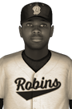

|
|
|  | Chevallier Big Deal in Baltimore: Hits for Cycle Saturday, May 17th, 1930 J.J. Chevallier hit for the cycle and paced the Baltimore Robins to a 7-6 victory over the New York Rebels at Sportsmans Park 1911 today. The Robins first baseman led the way for his club with 4 hits in 7 at-bats -- 1 single, 1 double, 1 triple and 1 home run -- along with 5 RBI and 3 runs. "Now that I know what J.J. is capable of, I'm going to expect it more often," Baltimore manager Eldin Gabriel joked with reporters after the game. J.J. Chevallier grounded out in the 1st, hit a two-run triple in the 3rd, doubled in the 5th, hit a two-run home run off Elliot Provost in the 7th, struck out in the 9th, grounded out in the 11th and hit an RBI single in the 13th. So far this year Chevallier has hit .328 with 5 home runs, 18 RBIs and 12 runs scored. View Boxscore |   |